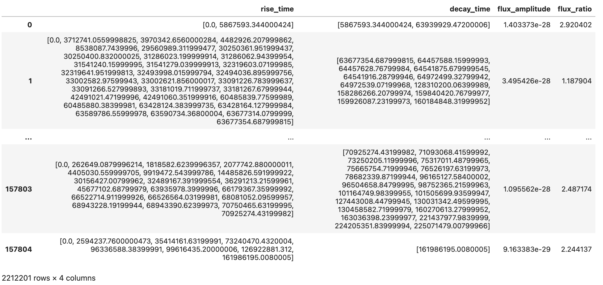
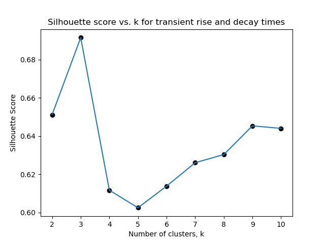

Overview
Naive Bayes assumes conditional independence...
Data Prep
This section will use the following data...

- Lightcurves ("s3://ipac-irsa-ztf/ztf/enhanced/dr24/lc/hats")
Code
For naive Bayes...
View Jupyter NotebookResults

Conclusions
Using the figures from the results section above...